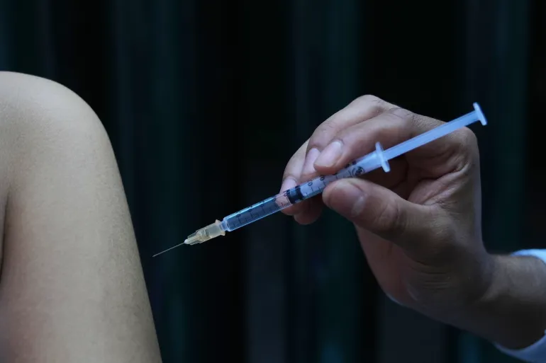

Breaking News
 Feb 9
Feb 9
by Reid Ashton
Dr. Oz Backs MMR Shot, Assures Vaccine Access Through Medicare and Medicaid
As vaccination rates drop and officials worry about losing the status of "measles elimination," measles cases are on the rise across the US.
As measles outbreaks continued in some states and people worried that the US would lose its title as a disease-free country, a high-ranking US public health official told Americans to get vaccinated. Dr. Mehmet Oz, a heart and lung surgeon, said on Sunday that he backs the measles vaccine. "Please get the vaccine," Oz, who is in charge of the Centers for Medicare & Medicaid Services, said. He told CNN's State of the Union, "Not all illnesses are equally dangerous and not all people are equally susceptible to those illnesses" "But you have to get the measles shot." Oz supported a number of recent changes to the federal government's advice on vaccines. He also said that President Trump and Robert F. Kennedy Jr., the country's health commissioner, have both asked in the past how well vaccines work. Oz gave a very strong warning about the measles. Oz said on TV that people should be scared of the measles when asked. “Oh, for sure.” He said Medicare and Medicaid will continue to cover the measles vaccine as part of the insurance programs. “There will never be a barrier to Americans get access to the measles vaccine. And it is part of the core schedule,” Oz said. Oz said on Sunday that Medicaid, the Children's Health Insurance Program, and health insurance bought through the Health Insurance Marketplace all pay for MMR shots.
Why This News Matters:
The U.S. used to be free of measles, but more cases are popping up, mostly in kids who haven't been vaccinated. With outbreaks spreading to more than one state, the renewed push for vaccination shows how worried people are about falling immunization rates and the return of diseases that can be avoided.
Outbreaks, Case Numbers, and Risk of Losing Elimination Status
The words came as South Carolina is facing a measles outbreak with hundreds of cases, more than the amount recorded in Texas earlier in 2025. Another outbreak has been discovered near the Utah-Arizona border, and several more states have reported confirmed cases this year. Children have been the most impacted. As of Thursday, the Centers for Disease Control and Prevention (CDC) reported 733 confirmed measles cases in the United States this year. According to the CDC, 3% of those who contracted measles were hospitalized, and 95% were unvaccinated. Arizona, South Carolina, and Utah have been suffering outbreaks since last year, with a total of 1,410 cases reported. According to the CDC, about 30% of measles cases in the United States this year have been found in children under the age of 5, with more than half occurring between the ages of 5 and 19. Last year, the CDC confirmed 2,276 measles cases countrywide, with 11 percent requiring hospitalization. That was the largest number of cases since the disease was pronounced eradicated at the turn of the century. In January, the United States achieved 12 consecutive months of measles transmission, a necessary prerequisite for losing its eradication status. In January alone, the United States saw 25% of the total cases confirmed in the previous year, and the outbreak shows little signs of diminishing while federal officials largely remain silent on vaccine. The vast majority of patients have not been vaccinated, but no national campaigns have been declared, with Oz serving as the federal government's first big announcement. After an unvaccinated 8-year-old girl in Texas died from measles last April, Health and Human Services Secretary Robert F. Kennedy Jr. stated that the "most effective way to prevent the spread" of the disease is to get the measles, mumps, and rubella (MMR) vaccine.
Declining Vaccination and Public Health Concerns
According to public health experts, the resurgence is taking place as vaccine skepticism develops, potentially driving the return of a disease that officials had previously proclaimed eradicated in the United States. According to federal data, vaccination rates in the United States have plummeted, while the percentage of children having exemptions has reached an all-time high. At the same time, vaccination-preventable diseases like measles and whooping cough are becoming more common across the country. States, not the federal government, have the ability to impose vaccines for students. While federal mandates frequently affect state legislation, several states have formed their own coalitions to fight the administration's vaccine guidelines.
Administration public health officials frequently emphasize the importance of restoring faith in public health systems following the coronavirus pandemic, when vaccine policy and the overall public health response to the fatal pandemic were highly divisive issues in American politics. During the pandemic, misinformation and conspiracy theories about the public health system flourished, and long-time anti-vaccine activists witnessed an increase in public attention.
Policy Debate and Vaccine Controversies
His employer, health secretary Robert F Kennedy Jr., has long questioned the safety and usefulness of immunizations. Last year, Kennedy defended measles immunizations as a personal choice while recommending experimental therapies for the extremely contagious disease. Kennedy's previous skepticism of vaccines has come under criticism since Trump chose him to run the Department of Health and Human Services. Critics of Kennedy have suggested that the health secretary's long-standing skepticism of U.S. vaccine recommendations, as well as his tolerance for the baseless idea that vaccines cause autism, may affect official public health counsel in ways that contradict medical consensus. Despite Kennedy's broad statements concerning the recommended vaccine schedule, Oz maintained that his stance was favorable of the measles vaccine. "When the first outbreak happened in Texas, he said, get your vaccines for measles, because that's an example of an ailment that you should get vaccinated against, " says Oz. Last month, the Republican administration removed some vaccine recommendations for youngsters, an alteration of the standard immunization schedule that the Department of Health and Human Services claimed was in response to a request from Trump. Trump requested that the FDA study how peer nations approach vaccine recommendations and consider altering U.S. policy accordingly. President Trump suggested in September that manufacturers split the MMR vaccination into three distinct doses, a move that acting CDC Director Jim O'Neill supported the following month. During a Senate hearing Tuesday, Jay Bhattacharya, the director of the National Institutes of Health, stated that no single vaccine causes autism, but he did not rule out the possibility that future study could reveal that any combination of vaccines had detrimental health consequences. However, in Senate testimony, Kennedy stated that the link between immunizations and autism had not been disproved. He has previously stated that some vaccine components, such as the mercury-containing preservative thimerosal, can cause neurological abnormalities in children, including autism. Most measles, mumps, and rubella vaccines do not contain thimerosal. Last year, Kennedy reorganized a government vaccine advisory group, which voted not to recommend thimerosal-containing vaccines.
Past Actions and International Concerns
During his Senate confirmation testimony last year, Kennedy stated that a heavily watched 2019 trip to Samoa, which occurred before to a deadly measles outbreak, had "nothing to do with vaccines." However, records uncovered by The Guardian and The Associated Press undermine that evidence. According to emails from staffers at the US Embassy and the United Nations, Kennedy planned to meet with top Samoan officials on his visit to the Pacific island nation. According to Samoan officials, Kennedy's trip boosted the credibility of anti-vaccine advocates prior to the measles outbreak, which affected thousands and killed 83 people, the majority of whom were children under the age of five. Oz's comments are part of a larger pattern of administration officials making conflicting and sometimes contradictory claims on the efficacy of vaccines as part of a revamp of US public health policy. Officials have walked a tight line in condemning former US vaccine policies, appearing to sympathize with unsubstantiated conspiracy theories advanced by anti-vaccine campaigners while remaining true to proven science. Questions concerning immunizations were not raised later in a Kennedy interview on Fox News Channel's "The Sunday Briefing," when he was asked what kind of Super Bowl snack he might have (most likely yogurt). He also eats steak and sauerkraut in the morning. Oz has previously supported Kennedy's campaign to "make America healthy again" (Maha), which aims to reorganize the country's food system, reject vaccine mandates, and cast doubt on some long-standing scientific findings. He questioned the efficacy of flu vaccines in an interview with Newsmax last year. "Every year, there is a flu vaccine. It does not always function well. That's why it's been so controversial lately," Oz explained. Instead, he suggested that Americans "take care" of themselves in order to "overwhelm" the flu when it strikes. 32m

Reid Ashton is a U.S. health news reporter covering medical policy, public health trends, and breakthrough scientific developments.